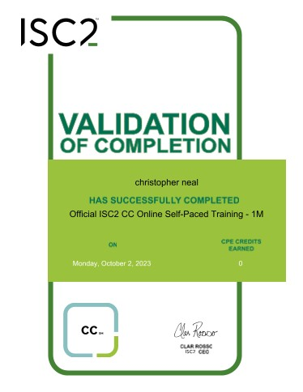
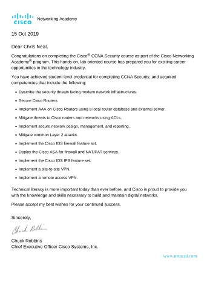
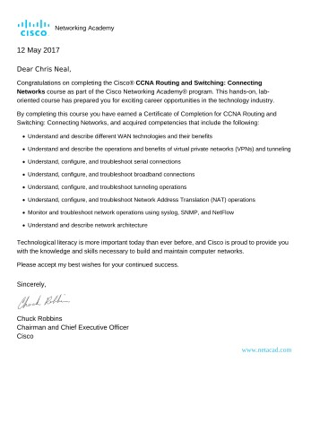
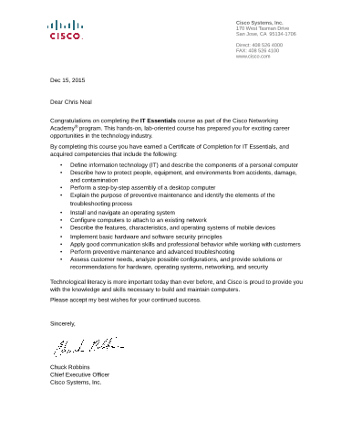

About
I currently am a student at MCC for Linux/Networking Administration working towards a bachelor's at phoenix college for Information Technology. I have been working with computers my whole life and have built multiple desktop systems running in a home lab environment. I am working as a SOC Analyst monitoring worldwide networks. I have already taken the comptia A+, Networking, and Linux systems administration/shell scripting courses holding several associate degrees in Network Administration.
https://www.youracclaim.com/users/christopher-neal.csg/************************** **current career path** ************************** ***Mesa Community College***network-and-systems-administration-aas
Degrees:
- AAS linux networking administration (spring 2021)
- AAS networking system administration (spring 2021)
Certificate of Completion:
- CCL Technology Support Analyst
- CCL Networking Administration: Cisco
- CCL Linux Associate
- CCL Linux Professional
- CCL Linux Networking Administration
------------------------------------------
***Phoenix College***
information-technology-9302-bas==========================================
Active certs:
- Cisco Certified Network Associate - CCNA
- ISC2 Certified in Cybersecurity - CC
- Secureworks XDR Certified Analyst
- Credential ID 0000048585
Expired Certs:
- CCENT Jan 2017 - Aug 2023
- CCNA:RS Jan 2020 - Aug 2023
- CCNA:SEC Feb 2020 - Aug 2023
------------------------------------------
Current cert goals:
- Microsoft AZ900
- Microsoft SC900
- Microsoft AZ104
Official ISC2 CC training Certificate Course Completion
Certified in Cybersecurity (CC) The vendor-neutral CC credential starts newcomers on their path to advanced cybersecurity certifications and future leadership roles. It proves to organizations that newly certified team members understand fundamental security principles and operations, network security and access controls and that they have the skills to meet and exceed performance standards in their beginning roles. All this allows organizations to build a stronger line of defense. |
 |
|---|
CCL Cisco CNT205 - CCNA Security
Understanding Cisco Network Security The holder of this credential has a strong foundation in Cisco security infrastructure, including the ability to recognize threats and network vulnerabilities and to mitigate those threats. 862e6e08-be1a-4443-93aa-6905beecf6d5 |
 |
|---|
CCL Cisco CNT170AA - CCNA: Route and Switch
Understanding of Cisco Network Devices The holder of this credential has a strong foundation in network fundamentals, LAN switching technologies, IPv4 and IPv6 routing technologies, WAN technologies, infrastructure services, security, and management. 67fad56b-8f9f-433e-ac3f-59cbd29b1aee |
 |
|---|
CCL Cisco IT Essentials - CompTia A+
CCL from Cisco Netacad course IT Essentials. Install, configure, and troubleshoot computers and mobile devices. Identify common security threats like phishing and spoofing. Develop critical thinking and problem-solving skills using both real equipment and Cisco Packet Tracer. Prepare for CompTIA A+ Certification. |
 |
|---|